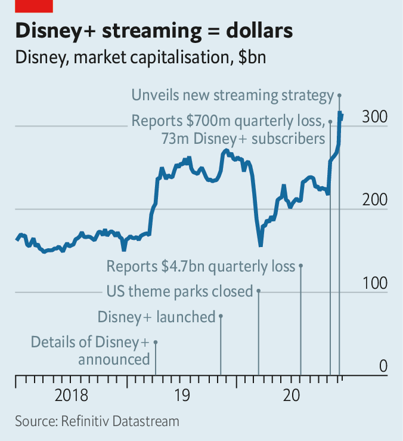

Text
2021-01-06T08:02:43+00:00
Cinema and streaming
电影院与流媒体
電影院與流媒體
Big bets on the small screen
小屏幕上的大赌注
小屏幕上的大賭注
Hollywood is pivoting to home entertainment
好莱坞正在转向家庭娱乐
好萊塢正在轉向家庭娛樂
IF ANY INDUSTRY could use help from Wonder Woman, it is cinemas. Lockdowns and a dearth of new releases have reduced worldwide box-office takings by about 70% in 2020. Thankfully for theatre owners, the corseted crusader charged to the rescue on Christmas Day, giving audiences a reason to go back to the movies.
如果说有哪个行业需要神奇女侠的帮助，那就是电影院了。由于封城和缺乏新片上映，2020年全球票房收入减少了约70%。让影院业主们庆幸的是，这位穿着紧身胸衣的战士在圣诞节冲锋陷阵展开营救，给观众一个回到影院的理由。
如果說有哪個行業需要神奇女俠的幫助，那就是電影院了。由於封城和缺乏新片上映，2020年全球票房收入減少了約70%。讓影院業主們慶幸的是，這位穿着緊身胸衣的戰士在聖誕節衝鋒陷陣展開營救，給觀眾一個回到影院的理由。
Yet in a plot twist, AT&T, the telecoms giant that owns the film’s producer, Warner Bros, has announced that “Wonder Woman 1984” and the 17 feature films on Warner’s release slate for 2021 will be made available on its HBO Max streaming service on the day they are released in cinemas, which historically have had an exclusive run of a few months. Purists are aghast. “The future of cinema will be on the big screen, no matter what any Wall Street dilettante says,” declared Denis Villeneuve, whose sci-fi epic, “Dune”, is among the affected films.
不过情节突转，该片的制作方华纳兄弟的母公司电信巨头AT&T宣布，《神奇女侠1984》和2021年华纳预备发行的17部剧情片将在它旗下的HBO Max流媒体平台上与院线同步上映。在这以前，院线一般都有头几个月的独播权。正统派对此感到震惊。“不管华尔街那帮半吊子怎么说，电影的未来还是在大屏幕。”丹尼斯·维伦纽夫（Denis Villeneuve）说，他的科幻大片《沙丘》（Dune）是受影响的影片之一。
不過情節突轉，該片的製作方華納兄弟的母公司電信巨頭AT&T宣布，《神奇女俠1984》和2021年華納預備發行的17部劇情片將在它旗下的HBO Max流媒體平台上與院線同步上映。在這以前，院線一般都有頭幾個月的獨播權。正統派對此感到震驚。“不管華爾街那幫半吊子怎麼說，電影的未來還是在大屏幕。”丹尼斯·維倫紐夫（Denis Villeneuve）說，他的科幻大片《沙丘》（Dune）是受影響的影片之一。
Warner is not the only studio shifting its focus to the small screen. In July Universal Pictures, part of Comcast, a cable company, did a deal with AMC, the world’s largest cinema chain, to give theatres just 17 days before its films are made available online (AMC will get a cut of streaming revenues). Paramount Pictures, owned by ViacomCBS, has sold several films to Netflix this year rather than release them to empty auditoriums. And on December 10th Disney, Hollywood’s biggest studio, signalled that it, too, sees its future in streaming.
华纳并不是唯一一家将重心转向小屏幕的电影公司。7月，有线电视公司康卡斯特（Comcast）旗下的环球影业与全球最大的连锁影院AMC达成一项协议，只给影院17天时间独播环球影业发行的电影，之后影片就能在线上点播（AMC将从流媒体收入中拿到分成）。维亚康姆哥伦比亚广播公司（ViacomCBS）旗下的派拉蒙影业今年把几部电影卖给了奈飞（Netflix），而不是在空荡荡的影院上映。12月10日，好莱坞最大的电影公司迪士尼也传达了认为自己的未来在流媒体的信号。
華納並不是唯一一家將重心轉向小屏幕的電影公司。7月，有線電視公司康卡斯特（Comcast）旗下的環球影業與全球最大的連鎖影院AMC達成一項協議，只給影院17天時間獨播環球影業發行的電影，之後影片就能在線上點播（AMC將從流媒體收入中拿到分成）。維亞康姆哥倫比亞廣播公司（ViacomCBS）旗下的派拉蒙影業今年把幾部電影賣給了奈飛（Netflix），而不是在空蕩蕩的影院上映。12月10日，好萊塢最大的電影公司迪士尼也傳達了認為自己的未來在流媒體的信號。
In a presentation to investors the studio announced a blitz of new content for its Disney+ streaming service: ten “Star Wars” series, ten more based on Marvel comic books, 15 other new original series and 15 feature films. By 2024 Disney+ will be spending $8bn-9bn annually on content, up from $2bn in 2020. Add ESPN+, which shows sports, and Hulu, another Disney streaming channel, and the company will splurge $14bn-16bn a year, nearly as much as the $17bn that Netflix, which pioneered streaming, earmarked to spend in 2020.
在一场面向投资者的发布会上，迪士尼宣布将在其流媒体服务Disney+上发起新一波内容轰炸：10部《星球大战》剧集、10部根据漫威漫画改编的剧集、15部新的原创剧集和15部剧情片。到2024年，Disney+每年在内容上的支出将从2020年的20亿美元增至80亿到90亿美元。加上播放体育节目的ESPN+和迪士尼的另一个流媒体频道Hulu，迪士尼每年要烧掉140亿至160亿美元，与流媒体先驱奈飞在2020年为内容拨出的170亿美元相差不多。
在一場面向投資者的發布會上，迪士尼宣布將在其流媒體服務Disney+上發起新一波內容轟炸：10部《星球大戰》劇集、10部根據漫威漫畫改編的劇集、15部新的原創劇集和15部劇情片。到2024年，Disney+每年在內容上的支出將從2020年的20億美元增至80億到90億美元。加上播放體育節目的ESPN+和迪士尼的另一個流媒體頻道Hulu，迪士尼每年要燒掉140億至160億美元，與流媒體先驅奈飛在2020年為內容撥出的170億美元相差不多。
Disney’s “content tsunami” is “frightening to any sub-scale company thinking about competing in the scripted entertainment space”, wrote Michael Nathanson of MoffattNathanson, a media-research firm. The Wall Street dilettantes swooned: Disney’s share price leapt by almost 14% the day after its presentation, reaching an all-time high and adding $38bn to its stockmarket value (see chart).
迪士尼的“内容海啸”可是“吓到了任何想在剧作类节目领域拼一把的小规模公司”，媒体研究公司MoffattNathanson的迈克尔·内桑森（Michael Nathanson）写道。华尔街的半吊子们都乐晕了：迪士尼的股价在计划公布后的第二天跃升近14%，达到了历史新高，市值增加了380亿美元（见图表）。
迪士尼的“內容海嘯”可是“嚇到了任何想在劇作類節目領域拼一把的小規模公司”，媒體研究公司MoffattNathanson的邁克爾·內桑森（Michael Nathanson）寫道。華爾街的半吊子們都樂暈了：迪士尼的股價在計劃公布後的第二天躍升近14%，達到了歷史新高，市值增加了380億美元（見圖表）。
Disney now expects 230m-260m Disney+ subscribers by 2024—more than treble its previous target. The extra viewers, and a planned price rise, put the service on track to break even in 2024, despite more content spending. Across all its streaming channels Disney expects more than 300m subscribers by 2024—maybe enough to overtake Netflix, currently on 195m. Disney will take Netflix on more directly via a new service, Star, with a wider range of programming, including a new show starring the indefatigable Kardashian clan.
迪士尼现在预计，到2024年Disney+的订户将达到2.3亿至2.6亿，是之前目标的三倍多。观众数量的增长加上计划中的提价令这项服务有望在2024年实现盈亏平衡，即便内容支出会增加。迪士尼预计，到2024年，旗下所有流媒体频道的订户将超过3亿——或许足以超过目前拥有1.95亿用户的奈飞。迪士尼将通过一项新服务Star与奈飞展开更直接的竞争，Star将提供更广泛多样的节目，包括一档以永不疲倦的卡戴珊家族为主角的新节目。
迪士尼現在預計，到2024年Disney+的訂戶將達到2.3億至2.6億，是之前目標的三倍多。觀眾數量的增長加上計劃中的提價令這項服務有望在2024年實現盈虧平衡，即便內容支出會增加。迪士尼預計，到2024年，旗下所有流媒體頻道的訂戶將超過3億——或許足以超過目前擁有1.95億用戶的奈飛。迪士尼將通過一項新服務Star與奈飛展開更直接的競爭，Star將提供更廣泛多樣的節目，包括一檔以永不疲倦的卡戴珊家族為主角的新節目。
Two months ago Disney began a corporate restructuring to increase its focus on streaming. Since then it has trimmed jobs at ABC News and announced the winding up of its radio business. The plans for Disney+ imply that by 2024 streaming will be the company’s single largest business by revenues, notes Benjamin Swinburne of Morgan Stanley, a bank. Whatever some directors may think, “made for TV” is no longer a slur in Hollywood. ■
两个月前迪士尼开始重组，把重心进一步转向流媒体。自那以后，它在美国广播公司新闻台（ABC News）裁员，并宣布关闭其广播业务。摩根士丹利的本杰明·斯温伯恩（Benjamin Swinburne）指出，Disney+的计划意味着到2024年，按收入计算，流媒体将成为迪斯尼最大的单一业务。无论一些导演怎么想，“电视电影”在好莱坞已不再是上不了台面的事物了。
兩個月前迪士尼開始重組，把重心進一步轉向流媒體。自那以後，它在美國廣播公司新聞台（ABC News）裁員，並宣布關閉其廣播業務。摩根士丹利的本傑明·斯溫伯恩（Benjamin Swinburne）指出，Disney+的計劃意味着到2024年，按收入計算，流媒體將成為迪斯尼最大的單一業務。無論一些導演怎麼想，“電視電影”在好萊塢已不再是上不了檯面的事物了。